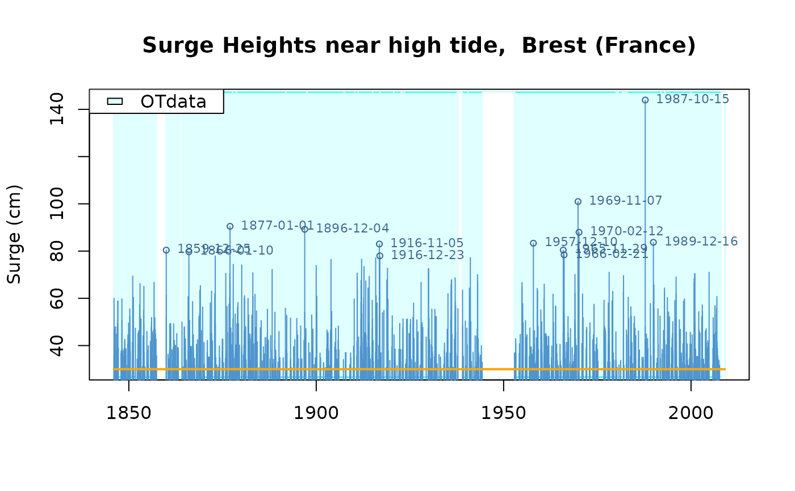

Surge heights at Brest
Brest.RdSurge heights near high tide at Brest tide gauge station (France), detailed version
Format
The format is: List of 5
$info: List of 6$name: chr"Brest"$shortLab: chr"Surge Heights at Brest (France)"$longLab: chr"Surge Heights near high tide, Brest (France)"$varName: chr"Surge"$varShortLab: chr"Surge"$varUnit: chr"cm"
$describe: chr "High tide sea surge over 30 cm at Brest (France)..."$OTinfo: List of 4$start: chr POSIXct[1:1], format:"1846-01-01"$end: chr POSIXct[1:1], format:"2009-01-01"$effDuration: num148$threshold: num30
$OTdata: 'data.frame': 1289 obs. of 2 variables:$date: POSIXct[1:1289], format:"1846-01-14" "1846-01-21"...$Surge: num [1:1289]36 60 46 40 33...
$OTmissing: 'data.frame': 43 obs. of 3 variables:$start: POSIXct[1:43], format:"1846-01-01" "1847-01-01"...$end: POSIXct[1:43], format:"1846-01-04" "1847-01-21"...$comment: chr [1:43]"" "" "" ""...
-
attr(*, "class")= chr "Rendata"
Details
Data are provided as a list.
infogives general information about the dataOTinfogives general information about the Over the Threshold part of data. The effective duration (effDurationelement) is the total duration for the periods with effective measurements.OTdatagive OT measurementsOTmissinggives start and end of the missing periods for OT measurements.
Data come from hourly sea levels measured and predicted by the french Service Hydrogéographique et Océanographique de la Marine (SHOM). Observed sea levels are available as REFMAR data at the url https://data.shom.fr/. Data were processed (declustered) by IRSN in order to provide a series of independent surge heights at high tide. Surge height at high tide is defined as the difference between the observed and the predicted maximal sea levels near high tide. A correction was applied to account for trend in the sea-level over the observation period.
The effective duration given in years is defined up to a small fraction of year due to leap years and leap seconds.
Examples
str(Brest)
#> List of 5
#> $ info :List of 6
#> ..$ name : chr "Brest"
#> ..$ shortLab : chr "Surge Heights at Brest (France)"
#> ..$ longLab : chr "Surge Heights near high tide, Brest (France)"
#> ..$ varName : chr "Surge"
#> ..$ varShortLab: chr "Surge"
#> ..$ varUnit : chr "cm"
#> $ describe : chr "High tide sea surge over 30 cm atBrest(France) separated byat least two days."
#> $ OTinfo :List of 4
#> ..$ start : POSIXct[1:1], format: "1846-01-01"
#> ..$ end : POSIXct[1:1], format: "2009-01-01"
#> ..$ effDuration: num 148
#> ..$ threshold : num 30
#> $ OTdata :'data.frame': 1289 obs. of 3 variables:
#> ..$ date : POSIXct[1:1289], format: "1846-01-14" "1846-01-21" ...
#> ..$ Surge : num [1:1289] 36 60 46 40 33 ...
#> ..$ comment: chr [1:1289] "" "" "" "" ...
#> $ OTmissing:'data.frame': 43 obs. of 3 variables:
#> ..$ start : POSIXct[1:43], format: "1846-01-01" "1847-01-01" ...
#> ..$ end : POSIXct[1:43], format: "1846-01-04" "1847-01-21" ...
#> ..$ comment: chr [1:43] "" "" "" "" ...
#> - attr(*, "class")= chr "Rendata"
Brest$OTinfo$start
#> [1] "1846-01-01 GMT"
plot(Brest)
